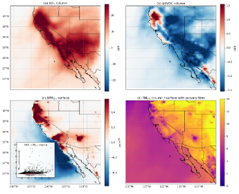
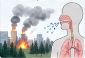
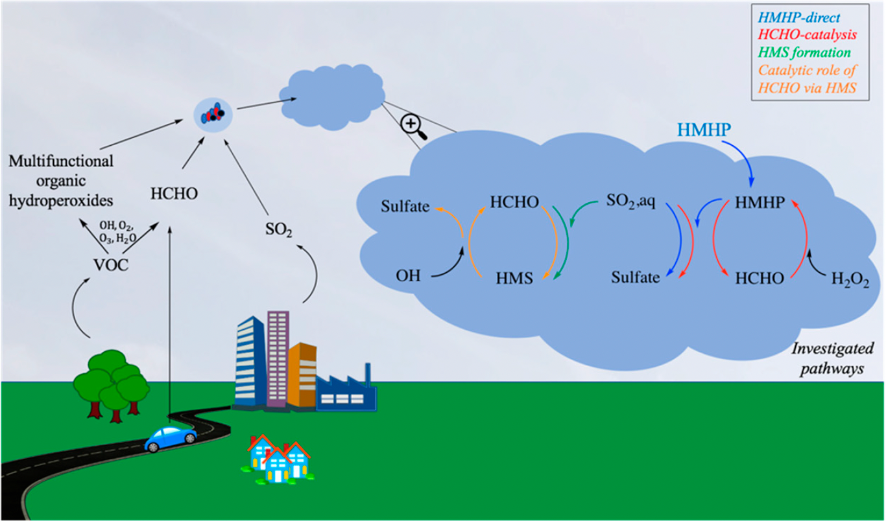

Research
Connecting the chemistry of the atmosphere to environmental and human health.
Atmospheric chemistry & health effects
Research at E-ACHE Lab investigates how natural and anthropogenic emissions are transformed in the atmosphere, how they contribute to particulate matter and oxidant formation, and how inhaled pollutants affect biological systems.
Our work connects laboratory measurements, atmospheric numerical models, field observations, and chemical mechanism development — from the chemistry of wildfire plumes to the production and fate of reactive oxygen species within the human respiratory tract.
Wildfire emissions & chemical evolution
We study the chemical composition of smoke and dust emissions and the transformations occurring within wildfire plumes. Our interests include the influence of flaming and smoldering combustion, photochemical processing, organic aerosol chemistry, oxidants transformation and regional air quality.
We investigate past, current and future air-quality conditions and the effects of extreme events using data analysis and regional atmospheric modeling, including WRF-Chem.

Health effects of atmospheric species
We investigate the production, interconversion and removal of reactive oxygen species (ROS), their potential contribution to oxidative stress, and chemical interactions and pathways taking place after exposure to pollutants.
We connecting atmospheric chemistry with mechanistic descriptions of responses inside the respiratory, circulatory and nervous systems. We develop modeling approaches and we conduct laboratory experiments upon synthesis of biological assays to investigate chemical reactions, pathways and signaling, as well as formation of reactive species.

Molecular level reactions in aqueous media
We examine the quantification of sulfur-containing compounds, invastigate the role of organic and inorganic species in aerosol formation, and evaluate air-pollution exposures in indoor and outdoor environments. We focus on molecular level reactions and examination of chemical pathways that influence indoor and outdoor environments, examining also the fomation of overlooked species such as the organosulfates.

Performance influence upon exposure to atmospheric pollutants
We investigate the biological responses and changes of various populations categories to link the environmental conditions with their educational, concentration and athletic performance.
Research collaborations
Interested in atmospheric chemistry, wildfire science, air-quality modeling, or health-related mechanistic chemistry?
Contact E-ACHE Lab →